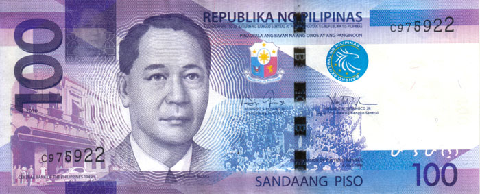

12 Landmarks of the Philippines that You Can See in the Philippine Money
Philippine landmarks, whether they are shaped by nature or historically built by people, are among the most valuable treasures of our nation. That is why the Central Bank of the Philippines or Bangko Sentral ng Pilipinas (BSP) decided to print a selection of these tourist destinations on the surfaces of our money. If you like to visit and explore the best and most famous places in the Philippines, you might want to consider adding these 12 Philippine landmarks, which can be see in the new series of Philippine money, in your bucket list.
1. Malacanyang Palace, Manila
The Malacanyang Palace or Palasyo ng Malakanyang is the official residence of the President of the Philippines. It is located along Jose P. Laurel Street in San Miguel, Manila. The palace was originally built in 1750 by Don Luis Rocha as a summer house along Pasig River. Since bought and owned by the government in 1825, the buildings have been remodeled, demolished, rebuilt, and expanded. Now, with a floor area of 160,000 square meters (1,722,226 sq ft), it is considered as the 7th largest palace in the world
Where can you see it?
Malacanyang Palace can be seen at the front side of P20 bill, together with Manuel L. Quezon (the second president of the Philippines) and the declaration of Filipino as the national language.2. Banaue Rice Terraces, Ifugao
The Banaue Rice Terraces or Hagdan-hagdang Palayan ng Banawe of Ifugao province in the Philippines is considered by Filipinos as the “Eighth Wonder of the World”. It is a 2,000-year-old terraces built by our ancestors using stone and mud walls to construct and form pond fields for the cultivation of rice in the mountains of Ifugao. It is said that our ancestors built this amazing structure by hands or using only ancient tools for farming. In 1973, the Banaue Rice Terraces was declared as a National Cultural Treasure by virtue of Presidential Decree No. 260.
Where can you see it?
The Banaue Rice Terraces can be seen at the back of P20 bill, together with Paradoxurus hermaphroditus philippinensis or Palm civet (Musang or Alamid in the Philippines) and Cordilleras weave design.3. MacArthur Landing Memorial National Park, Leyte
MacArthur Landing Memorial National Park, also called Leyte Landing Memorial Park and MacArthur Park, is a protected area that commemorates the landing of the allied forces under the command of General Douglas MacArthur during the WWII on October 20, 1944 in Palo Beach, Leyte. This historic event preceded the beginning of the Battle of Leyte Gulf and eventually the liberation of the Philippines from the Japanese occupation. The park is located at Brgy, Candahug and Baras, Palo, Leyte.
Where can you see it?
The Leyte Landing Memorial Park can be seen at the face of P50 bill, together with Sergio Osmeña (the fourth President of the Philippines) and the First Philippine Assembly.4. Taal Lake and Taal Volcano, Batangas

Taal Lake in Batangas is one of the most famous tourist attractions in the Philippines. The beautiful landscape of the lake which surrounds Taal Volcano (the smallest active volcano in the world) can also be seen in an overlooking view from Tagaytay City in Cavite. By crossing the lake through a motorized banca, tourists can visit Volcano Island. On the island, they can hike or ride a horse to reach the top of the volcano where a breathtaking view of the crater containing a crater lake and the Vulcan Point awaits them.
Where can you see it?
Taal lake and Taal volcano can be seen at the reverse side of P50 bill along with Caranx ignobilis or maliputo (a large type of fishes inhabiting Taal Lake), and Batangas embroidery design.5. Luneta and Intramuros, Manila
Luneta and Intramuros are two historically significant places, not only in Manila, but in the entire Philippines. The proclamation of the Philippine Independence on July 4, 1946 was held at Independence Grandstand in Luneta. The original site was located just across the Monument of Rizal and the Independence Flag. Independence Grandstand was moved and now known as Quirino Grandstand. A walking distance from Rizal Park is Intramuros, a historic walled city where you can travel back in time and reflect on how the Filipinos lived during the colonial rule of Spain. The old building of the BSP was also located inside Intramuros.
Where can you see it?
Although the Independence Grandstand does not already exist in its original location, the declaration of the Philippine independence in 1946 as shown in the front side of ₱100 will be remembered as held in Luneta. Along with the declaration of the Philippine Independence, are Manuel A. Roxas (the fifth President of the Philippines) and the old BSP building in Intramuros.

6. Mayon Volcano, Albay
Mayon Volcano or Bulkang Mayon in the province of Albay in Bicol region is known as the most perfectly formed stratovolcanic cone in the world. It’s one of the most famous landmarks in the Philippines. It’s also one of the most popular places you will see in a Philippine postcard. But behind its incredible landscape is a volcano which is considered the most active in the Philippines. That is why it is regularly monitored by PHIVOLCS.
Where can you see it?
Mayon Volcano can be seen at the back of P100 bill, along with a Rhincodon typus (whale shark or butanding), and Bicol textile design.7. Barasoain Church, Bulacan
The Barasoain Church (also known as Our Lady of Mt. Carmel Parish) in Malolos, Bulacan is considered the most important religious buildings in the Philippines because of its role during the important events that occurred in the country. The church is the place of the First Philippine Congress convention (September 15, 1898), the drafting of the Malolos Constitution (September 29, 1898 to January 21, 1899), and the inauguration of the First Philippine Republic (January 23, 1899). The church has also earned the title of the Cradle of Democracy in the East. It was built in 1630 and founded by Augustinian Missionaries in 1859.
Where can you see it?
The images of Aguinaldo Shrine in Cavite and Barasoain Church in Bulacan are both shown at the face of P200 bill, along with Diosdado P. Macapagal (the ninth President of the Philippines) and the EDSA People Power in 2001.8.Chocolate Hills, Bohol
Chocolate Hills, the pride of Boholanos are Mother Nature’s work of wonder and beauty. There are at least 1,260 hills covered in green grasses that turn brown during summer or the dry season, which make them look like chocolates. These amazing hills are spread over the municipalities of Carmen, Sagbayan and Batuan. Tourists can get a great view of these incredible geological formations at Chocolate Hills Complex in the municipality of Carmen and at Sagbayan Peak in Sagbayan town in Bohol.
Where can you see it?
The Chocolate Hills in Bohol can be seen at the reverse side of P200 bill, along with the Philippine tarsier, and Visayas weave design.9. Benigno Aquino Monument, Makati
The monument of Benigno Aquino in Makati City commemorates the great sacrifice of former Philippine senator Benigno “Ninoy” Aquino to fight for and earn democracy for the Filipino people during the Marcos regime. The bronze monument depicts the fearless Ninoy held by two bodyguards. The monument is located at the corner of Ayala Avenue and Paseo de Roxas in Makati, Metro Manila.
Where can you see it?
The monument of Ninoy can be seen at the front side of P500 bill, together with his wife and former president Corazon C. Aquino, and the EDSA People Power of 1986.10. Puerto Princesa Subterranean River National Park, Palawan
The Puerto Princesa Subterranean River National Park is a protected area in Palawan, Philippines. It is located approximately 80 kilometers north of Puerto Princesa City. The park has a stunning limestone karst landscape containing an 8.2 km long underground river that flow directly to the West Philippine Sea. The cave system contains stalactites, stalagmites, small underground waterfalls, and more river channels. It is also inhabited by large bats and marine creatures. The park was inscribed by UNESCO as a World Heritage Site on December 4, 1999. The Puerto Princesa Underground River is also considered as one of the New 7 Wonders of Nature.
Where can you see it?
The Puerto Princesa Subterranean Underground River can be seen at the back side of P500 bill, along with the blue-naped parrot (Tanygnathus lucionensis) and the cloth design in Southern Philippines.11. Tubbataha Reefs Natural Park, Sulu Sea
The Tubbataha Reefs Natural Park is a 97,030-hectare marine and bird sanctuary located near the middle of Sulu Sea (150 kilometers southeast of Puerto Princesa City, Palawan). It consists of two large atolls and the smaller Jessie Beazley Reef. There are more than 1,000 marine species that inhabit the reefs, including manta rays, sea turtles, clownfish, lionfish, sharks, and the endangered hawksbill sea turtles. Tubbataha Reefs Natural Park was declared as a World Heritage Site by UNESCO in December 1993 and as the 35h ASEAN Heritage Park by ASEAN’s Center for Biodiversity in November 2015. Tubbataha was also named one of the best dive sites in the world by the CNN travel.
Where can you see it?
Tubbataha Reefs Natural Park can be seen at the reverse side of P1,000 bill, along with the South Sea pearl (Pinctada maxima) and the Mindanao design for Tinalak or Ikat-dyed abaca.